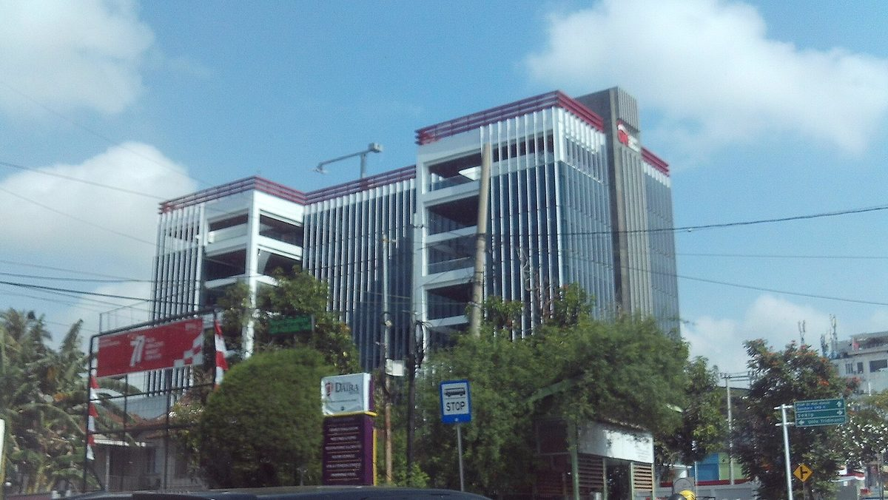

Satgas PASTI OJK hentikan 16 entitas investasi ilegal, ada modus sewa komputasi, "USDT", sampai nonton film dibayarOJK's PASTI Task Force shuts 16 illegal investment entities, with schemes ranging from computing rental and "USDT" to paid movie-watching
Satgas Pemberantasan Aktivitas Keuangan Ilegal (Satgas PASTI) menghentikan kegiatan 16 entitas yang diduga menipu lewat tawaran investasi. Modusnya antara lain tugas berbayar dengan setoran deposit, investasi kripto dan forex, iklan AI yang menampilkan tokoh publik, dan pencatutan nama perusahaan berizin.The Task Force for the Eradication of Illegal Financial Activities (Satgas PASTI) has halted the activities of 16 entities suspected of fraud through investment offers. The schemes include paid tasks with deposits, crypto and forex investment, AI ads featuring public figures, and impersonation of licensed companies.

Poin utamaKey points
- Satgas PASTI menghentikan kegiatan 16 entitas yang diduga menawarkan investasi ilegal, menurut keterangan tertulis yang dikutip CNBC Indonesia dan detikFinance, Selasa (10/11/2026).
- Sepuluh entitas, termasuk GPUCore, PilotXone, EarnTycoon, ZEDT, USDT AL, dan Task 33, diduga menipu lewat tawaran sewa komputasi dengan skema tugas, setoran deposit, dan member get member.
- OneTwoMarkets diduga menawarkan investasi forex, komoditas, kripto, saham, dan indeks, serta memakai teknologi AI yang menampilkan tokoh publik untuk meyakinkan calon korban.
- Ada juga modus pencatutan nama perusahaan berizin, seperti Easycash (PT Indonesia Fintopia Technology) dan Guotai Haitong Securities, serta MAERA dengan tugas menonton film dan membeli hak cipta film.
- Akses aplikasi dan tautan terkait diblokir. Laporan bisa disampaikan lewat sipasti.ojk.go.id atau Kontak OJK 157.
- Satgas PASTI halted the activities of 16 entities suspected of offering illegal investments, according to a written statement cited by CNBC Indonesia and detikFinance on Tuesday (10/11/2026).
- Ten entities, including GPUCore, PilotXone, EarnTycoon, ZEDT, USDT AL and Task 33, are suspected of fraud through computing-rental offers with task schemes, deposits and member-get-member recruitment.
- OneTwoMarkets is suspected of offering investment in forex, commodities, crypto, stocks and indices, and of using AI technology featuring public figures to convince potential victims.
- Other schemes involved impersonating licensed companies, such as Easycash (PT Indonesia Fintopia Technology) and Guotai Haitong Securities, as well as MAERA with tasks of watching films and buying film copyrights.
- Access to the related apps and links has been blocked. Reports can be made via sipasti.ojk.go.id or OJK Contact 157.
Otoritas Jasa Keuangan (OJK) melalui Satuan Tugas Pemberantasan Aktivitas Keuangan Ilegal (Satgas PASTI) menghentikan kegiatan 16 entitas yang diduga menawarkan investasi ilegal kepada masyarakat. Hal ini disampaikan Satgas PASTI dalam keterangan tertulis pada Selasa (10/11/2026), seperti dikutip CNBC Indonesia dan detikFinance.
Sebagian besar entitas memakai modus tugas tertentu. Sepuluh entitas dengan nama GPUCore, PilotXone, Aset Saham, Orion Wealth, Jadiduit, Impersonasi Easy Cash, EarnTycoon, ZEDT, USDT AL, dan Task 33 diduga melakukan penipuan investasi lewat tawaran penyewaan komputasi dengan skema pengerjaan tugas, setoran deposit, dan member get member. Menurut detikFinance, kesepuluh entitas itu tidak berbadan hukum di Indonesia, tidak berizin OJK, dan aplikasi atau situsnya tidak tercatat sebagai Penyelenggara Sistem Elektronik (PSE).
Satgas PASTI juga menemukan modus investasi instrumen keuangan dan aset. OneTwoMarkets diduga menawarkan investasi forex, komoditas, kripto, saham, dan indeks, serta mengaku berafiliasi dengan perusahaan berizin di Afrika Selatan. Dalam penawarannya, entitas ini diduga menggunakan teknologi kecerdasan buatan (AI) yang menampilkan tokoh publik. Hasil verifikasi menunjukkan OneTwoMarkets tidak berbadan hukum di Indonesia dan tidak berizin OJK.
Modus lain mencakup Zahra Berkah, yang menurut detikFinance menjanjikan keuntungan hingga 80% dalam 30 hari; Singapore Bhinneka Capital (SBC), yang menjanjikan keuntungan hingga tiga kali lipat berdasarkan jumlah anggota yang direkrut; Brevondale, yang mencantumkan logo OJK dan KSEI; serta MAERA, yang menawarkan tugas menonton film, membeli hak cipta, royalti, dan produksi film untuk pendapatan harian.
Satgas PASTI juga menemukan pencatutan nama perusahaan berizin. Orion Wealth mengatasnamakan Orion Wealth Management, Impersonasi Easy Cash mencatut nama PT Indonesia Fintopia Technology (Easycash), dan Impersonasi Guotai Haitong mencatut nama perusahaan sekuritas berizin di China.
Satgas PASTI telah menghentikan kegiatan entitas-entitas tersebut, memblokir akses aplikasi dan tautan (URL) terkait, dan akan berkoordinasi dengan aparat penegak hukum. Masyarakat yang dirugikan diminta melapor ke aparat penegak hukum setempat. Indikasi penawaran ilegal dapat dilaporkan lewat sipasti.ojk.go.id, Kontak OJK 157, WhatsApp 081157157157, atau email resmi OJK.
Indonesia's Financial Services Authority (OJK), through the Task Force for the Eradication of Illegal Financial Activities (Satgas PASTI), has halted the activities of 16 entities suspected of offering illegal investments to the public. Satgas PASTI said this in a written statement on Tuesday (10/11/2026), as cited by CNBC Indonesia and detikFinance.
Most of the entities used task-based schemes. Ten entities named GPUCore, PilotXone, Aset Saham, Orion Wealth, Jadiduit, Impersonasi Easy Cash, EarnTycoon, ZEDT, USDT AL and Task 33 are suspected of investment fraud through computing-rental offers with task schemes, deposits and member-get-member recruitment. According to detikFinance, the ten entities have no legal entity in Indonesia, are not licensed by OJK, and their apps or websites are not registered as Electronic System Operators (PSE).
Satgas PASTI also found schemes involving financial instruments and assets. OneTwoMarkets is suspected of offering investment in forex, commodities, crypto, stocks and indices, and claimed affiliation with a licensed company in South Africa. In its offers, the entity allegedly used artificial intelligence (AI) technology featuring public figures. Verification showed OneTwoMarkets has no legal entity in Indonesia and is not licensed by OJK.
Other schemes included Zahra Berkah, which according to detikFinance promised returns of up to 80% in 30 days; Singapore Bhinneka Capital (SBC), which promised returns of up to three times based on the number of members recruited; Brevondale, which displayed the OJK and KSEI logos; and MAERA, which offered tasks of watching films and buying film copyrights, royalties and productions for daily income.
Satgas PASTI also found impersonation of licensed companies. Orion Wealth used the name of Orion Wealth Management, Impersonasi Easy Cash used the name of PT Indonesia Fintopia Technology (Easycash), and Impersonasi Guotai Haitong used the name of a securities firm licensed in China.
Satgas PASTI has halted these entities' activities, blocked access to the related apps and links (URLs), and will coordinate with law enforcement. People who have suffered losses are asked to report to local law enforcement. Signs of illegal offers can be reported via sipasti.ojk.go.id, OJK Contact 157, WhatsApp 081157157157, or OJK's official email.
Kenapa pentingWhy it matters
Banyak penipuan memakai istilah yang akrab bagi pengguna crypto, seperti "USDT", komputasi GPU, atau trading kripto, untuk terlihat meyakinkan. Mengecek legalitas sebelum menyetor dana adalah perlindungan paling dasar.Many scams use terms familiar to crypto users, such as "USDT", GPU computing or crypto trading, to look convincing. Checking legality before depositing funds is the most basic protection.
Cara cek sebelum setor danaHow to check before depositing funds
- Waspadai janji untung tinggi dan pasti, apalagi yang dibayar per tugas atau per rekrutan anggota baru.
- Cek izin langsung di situs resmi OJK atau Kontak OJK 157, bukan dari logo atau sertifikat yang ditunjukkan penawar.
- Untuk aset kripto, gunakan hanya pedagang aset kripto yang berizin dan diawasi OJK.
- Be wary of promises of high, guaranteed returns, especially ones paid per task or per new member recruited.
- Check licensing directly on OJK's official website or via OJK Contact 157, not from logos or certificates shown by the person making the offer.
- For crypto assets, use only crypto asset traders licensed and supervised by OJK.
Foto: Gedung OJK Regional 7 Sumatera Bagian Selatan, Palembang (Firzafp, CC BY-SA 4.0, Wikimedia Commons). Foto ilustrasi.Photo: OJK Regional Office 7 South Sumatra building, Palembang (Firzafp, CC BY-SA 4.0, Wikimedia Commons). Illustrative photo.
SumberSources
- CNBC Indonesia: OJK Bongkar 16 Investasi Bodong, Ada Modus Nonton Film Dibayar
- detikFinance: 16 Entitas Keuangan Ilegal Ditutup Gegara Penipuan, Begini Modusnya
- Portal Satgas PASTI OJK (pelaporan resmi)halaman utama penerbitpublisher homepage
Ikuti COIN BRO diFollow COIN BRO on Telegram
Dapatkan berita seperti ini lebih cepat di channel kami. Gratis.Get news like this faster on our channel. Free.
Bukan saran finansial. Artikel ini adalah informasi dan edukasi, bukan ajakan membeli atau menjual aset apa pun. Aset kripto berisiko tinggi. Fakta mengikuti sumber yang tercantum; bagian berlabel interpretasi adalah pendapat, bukan fakta. Menemukan kesalahan? Lihat kebijakan koreksi.Not financial advice. This article is information and education, not a solicitation to buy or sell any asset. Crypto assets are high risk. Facts follow the listed sources; sections labeled interpretation are opinion, not fact. Found an error? See our corrections policy.